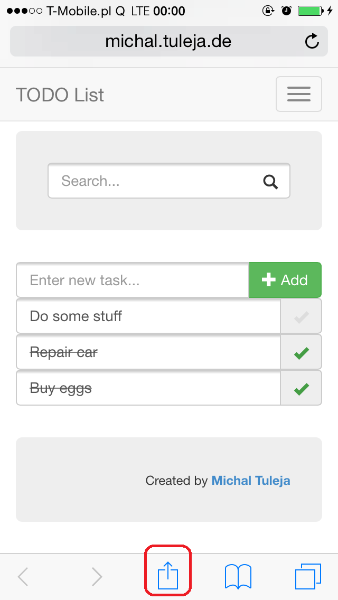
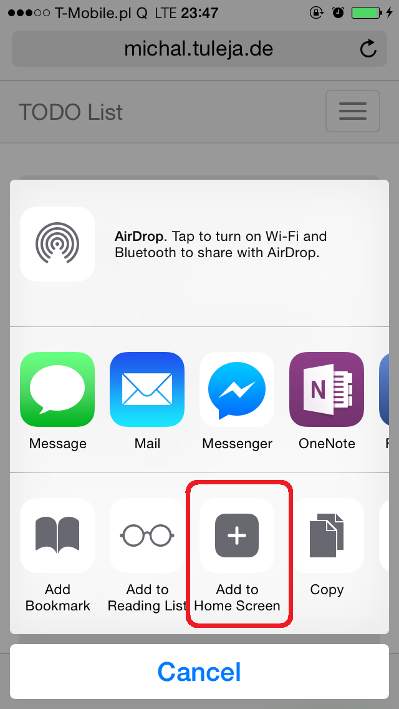
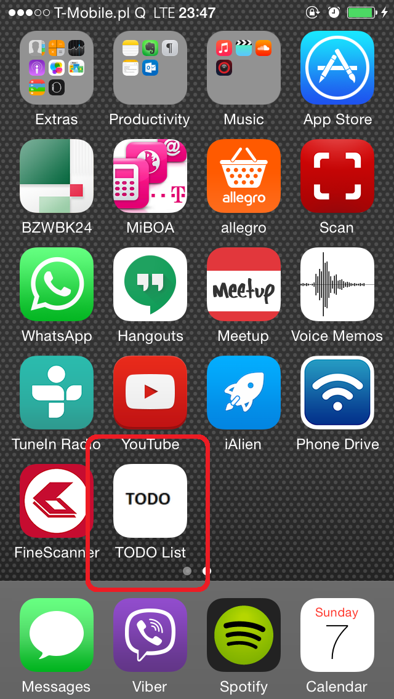
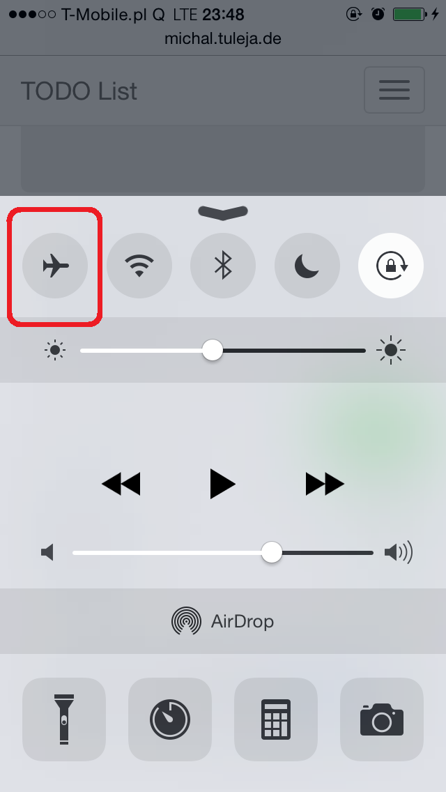

You can create a shortcut on you home screen under Android/iOS
  Due to HTML5 manifest file, this app does not require an internet connection to use it in offline mode. You can try an airplane mode and refresh the page. All data will be preserved and you can still access the app.
